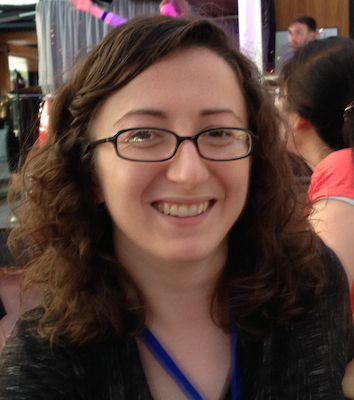

About me
I'm a data scientist at WSP.
I am committed to using my skills to further socially beneficial goals. In the summer of 2015 I was a fellow in the
Data Science for Social Good summer fellowship. I am always looking for more opportunities to use data science for good.